What is PHP?
- PHP is an acronym for "PHP: Hypertext Preprocessor"
- PHP is a widely-used, open source scripting language
- PHP scripts are executed on the server
- PHP is free to download and use
What is a PHP File?
- PHP files can contain text, HTML, CSS, JavaScript, and PHP code
- PHP code is executed on the server, and the result is returned to the browser as plain HTML
- PHP files have extension "
.php"
What Can PHP Do?
- PHP can generate dynamic page content
- PHP can create, open, read, write, delete, and close files on the server
- PHP can collect form data
- PHP can send and receive cookies
- PHP can add, delete, modify data in your database
- PHP can be used to control user-access
- PHP can encrypt data
Why PHP?
- PHP runs on various platforms (Windows, Linux, Unix, Mac OS X, etc.)
- PHP is compatible with almost all servers used today (Apache, IIS, etc.)
- PHP supports a wide range of databases
- PHP is free. Download it from the official PHP resource: www.php.net
- PHP is easy to learn and runs efficiently on the server side
Static Websites
Static websites are built with fixed content that doesn’t change dynamically when a user interacts with it. They’re made using HTML, CSS, and sometimes JavaScript to display information, but they don’t require a backend server or database, making them lightweight and fast.
Key Features:
- Fixed Content: Content is pre-built and doesn’t change based on user input.
- No Backend Needed: Doesn’t require a server or database.
- Fast Loading: Static sites load quickly since they only need to fetch the content and design from files, not a database.
- Easy to Host: They can be hosted anywhere, from GitHub Pages to Netlify, with minimal setup.
Benefits:
- Low Cost: Hosting is often free or inexpensive.
- Security: Without a backend, there’s less risk of database hacks.
- Performance: Fast loading times due to fewer server requests.
Common Use Cases:
- Portfolio websites
- Documentation pages
- Blogs (with static site generators)
- Company landing pages
Tools for Creating Static Sites:
- HTML & CSS: Basic building blocks of a static site.
- Static Site Generators: Tools like Jekyll, Hugo, and Gatsby that convert content into static HTML pages.
- Deployment Platforms: Netlify, Vercel, GitHub Pages.
If you’re planning to build a simple site for something like CodeWhere, a static setup might work well unless you need user interaction or real-time updates.
Dynamic Websites
Dynamic websites are built to display content that changes in response to user interactions or other factors, like time or location. They rely on both front-end and back-end technologies to fetch and display up-to-date information, making them ideal for more complex applications requiring user engagement and interaction.
Key Features:
- Interactive Content: Content changes based on user input or other variables.
- Backend Required: Requires a server and often a database to process and serve content.
- Data-Driven: Content can be dynamically generated based on data from databases or APIs.
- Personalized Experience: Users can have personalized content, such as account information, recommendations, or messages.
Benefits:
- User Engagement: Dynamic websites offer interactive features, increasing user engagement.
- Scalability: Suitable for applications that need regular updates, like news, e-commerce, or social media platforms.
- Personalization: Tailored content based on user preferences, increasing relevance and engagement.
Common Use Cases:
- Online stores
- Social media platforms
- Content management systems (e.g., WordPress)
- Interactive web applications (e.g., Google Docs, project management tools)
Technologies for Building Dynamic Sites:
- Server-Side Languages: PHP, Node.js, Python (e.g., Django, Flask), Ruby, Java (e.g., Spring).
- Databases: MySQL, MongoDB, PostgreSQL, Firebase.
- Front-End Frameworks: React, Vue, Angular for creating dynamic user interfaces.
- APIs: Allows data exchange between the server and client for real-time updates.
Dynamic websites are best suited for applications that need frequent content updates, real-time data, or user-specific experiences. If CodeWhere is expected to have personalized features or interactions, a dynamic site approach may be ideal.
Introduction to Web Servers
A web server is a system that hosts, processes, and delivers web content to users. When users access a website through a browser, their requests are sent to a web server, which processes them and returns the necessary files (HTML, CSS, JavaScript, images, etc.) to display the requested web pages.
Key Functions of a Web Server:
- Hosting Content: Web servers store website files and make them accessible over the internet.
- Handling Requests: They receive HTTP requests from clients (browsers) and respond with the appropriate resources.
- Security: Web servers can provide security features like SSL encryption to protect data during transmission.
- Resource Management: They manage network traffic, bandwidth, and resources to ensure smooth performance.
Examples of Web Servers:
- Apache HTTP Server: An open-source server known for its stability, flexibility, and popularity.
- Nginx: Known for its performance, it is widely used for handling high-traffic sites.
- Microsoft IIS: Internet Information Services, a server designed for Windows environments.
- LiteSpeed: A performance-focused server, often used as an alternative to Apache.
How a Web Server Works:
- Request: The browser sends a request for a specific page or resource (e.g.,
example.com) via HTTP/HTTPS. - Processing: The server receives the request, locates the requested file, and processes any necessary server-side scripts.
- Response: The server responds with the requested file, which the browser then displays as a webpage.

Benefits of Using a Web Server:
- Accessibility: Makes content available online for users worldwide.
- Reliability: Provides stable access to resources and can handle multiple requests.
- Customization: Allows configurations to optimize performance, security, and functionality.
In essence, a web server acts as the backbone of the internet, connecting users to the content and applications they need. Without web servers, online content delivery would not be possible.
Introduction to Local Servers
A local server is a server environment hosted on your own computer. It allows developers to build, test, and run applications locally without needing to deploy them online. Local servers are commonly used for development and testing purposes.
Key Functions of a Local Server:
- Local Development: Allows developers to build and test applications without needing an internet connection.
- Speed: Since everything is running locally, response times are faster compared to remote servers.
- Environment Control: Developers have complete control over the environment, including versions of software, databases, and configurations.
- Error Testing: Enables testing of applications in a controlled environment before going live.
Common Local Server Software:
- XAMPP: A package that includes Apache, MySQL, PHP, and Perl, commonly used for PHP development.
- WAMP: A Windows-based alternative to XAMPP, with Apache, MySQL, and PHP.
- MAMP: A local server environment for macOS, including Apache, MySQL, and PHP.
- Local by Flywheel: A tool designed for WordPress development with easy local setup and configurations.
- Node.js: Commonly used to run JavaScript-based applications locally for full-stack development.
How to Set Up a Local Server:
- Download: Choose and download a local server software package (e.g., XAMPP, WAMP, MAMP).
- Install: Follow the installation instructions and set up the server environment.
- Run Server: Start the local server software, which will open a control panel to manage services like Apache and MySQL.
- Access: Once running, you can access the local server by typing
localhostor127.0.0.1in a browser.
Benefits of Using a Local Server:
- No Internet Required: Development can continue offline.
- Privacy: Local development keeps projects private until they are ready for deployment.
- Cost-Effective: Free to set up, with no hosting fees for local development.
Local servers are invaluable for developers as they provide a risk-free environment to test, debug, and improve applications before deploying them online.
Introduction to Remote Servers
A remote server is a computer or server located in a remote data center, designed to store, process, and serve data to users over the internet. Unlike local servers, which operate on a developer’s personal computer, remote servers are accessed online and provide services or resources to multiple users across different locations.
Key Functions of a Remote Server:
- Data Hosting: Stores files, databases, and applications, allowing users to access them from anywhere.
- Handling Requests: Processes user requests and delivers content or application data in real time.
- High Availability: Often configured to run 24/7 to serve users around the clock.
- Security and Backups: Provides robust security, encryption, and automated backups to protect data.
Types of Remote Servers:
- Web Servers: Servers like Apache or Nginx that deliver websites and applications to users over the internet.
- Application Servers: Host applications for remote access, often running Java, .NET, or PHP applications.
- Database Servers: Store and manage databases that applications can query to retrieve information.
- File Servers: Centralized storage for file sharing and retrieval.
- Cloud Servers: Virtual servers hosted in cloud environments, such as AWS, Azure, or Google Cloud.
Benefits of Using a Remote Server:
- Accessibility: Accessible from anywhere with an internet connection.
- Scalability: Resources can be scaled up or down depending on the user or application needs.
- Cost-Effectiveness: No need for on-premise hardware; services are often pay-as-you-go in the cloud.
- Reliability: Most remote servers offer uptime guarantees and redundant systems to ensure data availability.
How to Connect to a Remote Server:
- Access Information: Obtain the server’s IP address or hostname and the necessary login credentials.
- Use an SSH Client: For secure connections, use an SSH client like PuTTY (for Windows) or the Terminal (for macOS/Linux).
- Remote Desktop Tools: For graphical interfaces, use tools like Remote Desktop Protocol (RDP) or VNC.
- Upload Files: Use protocols like FTP or SFTP to transfer files to and from the server.
Remote servers are essential for hosting websites, applications, databases, and more. They enable global accessibility and provide the backbone of the internet, serving billions of users daily.
How to Install WAMP
WAMP (Windows, Apache, MySQL, PHP) is a Windows-based software package that sets up a local web server, allowing developers to test applications in a local environment. This guide will walk you through installing WAMP on your Windows computer.
Step-by-Step Installation Guide:
- Download WAMP:
- Visit the official WAMP website at www.wampserver.com.
- Download the appropriate version (32-bit or 64-bit) based on your Windows operating system.
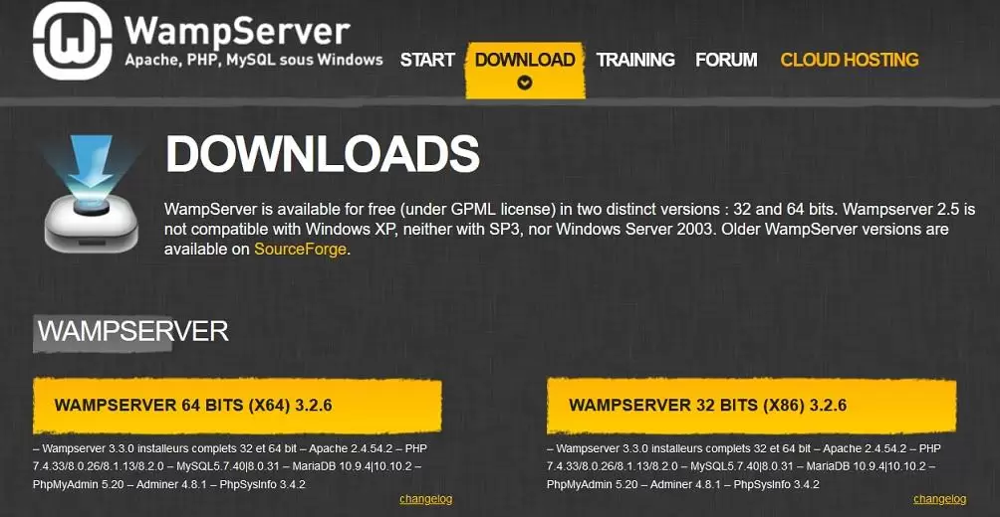
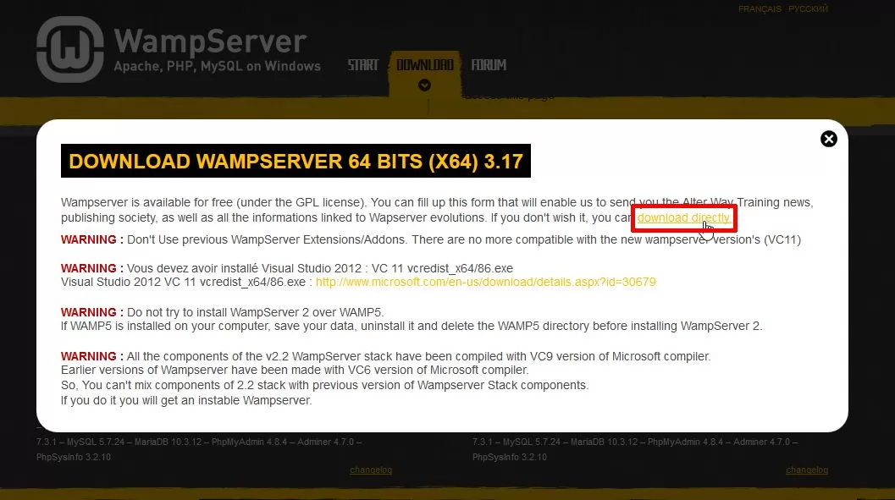
- Run the Installer:
- Once downloaded, open the installer file and run it as an administrator.
- Follow the on-screen instructions to complete the setup process.
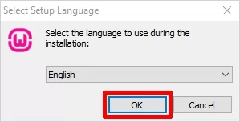
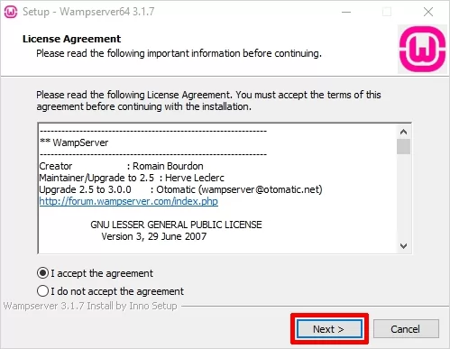
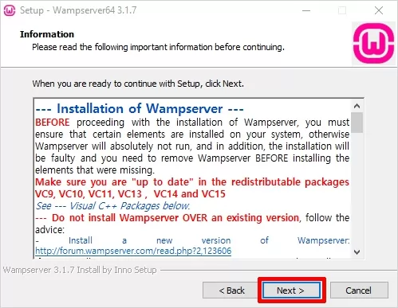
- Choose Installation Directory:
- Select a folder to install WAMP (default is usually
C:\wamp).
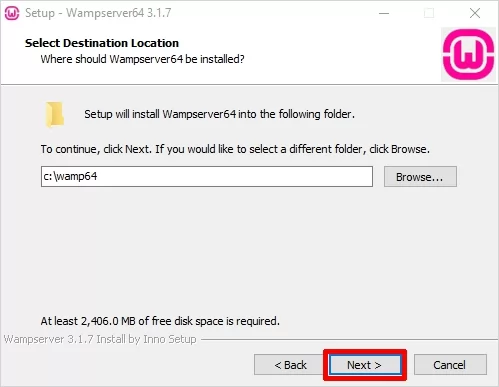
- Select a folder to install WAMP (default is usually
- Configure Settings:
- During installation, you may be prompted to choose a default browser. You can use the default or select another one by navigating to its location.
- WAMP also allows you to set a text editor (e.g., Notepad) for configuration files.
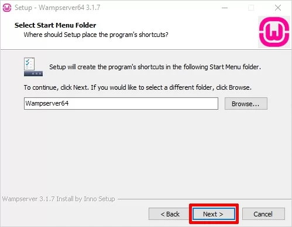
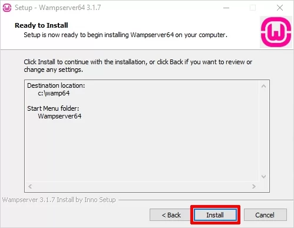
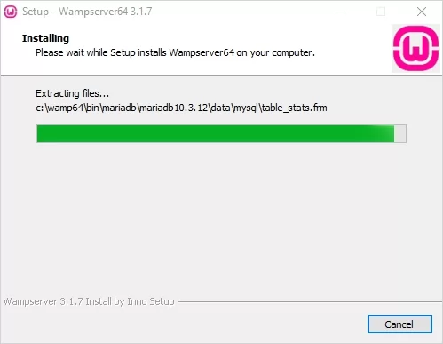
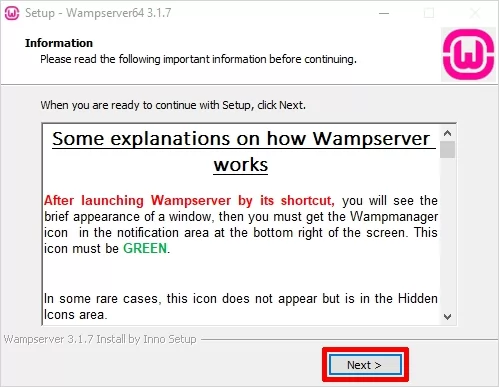
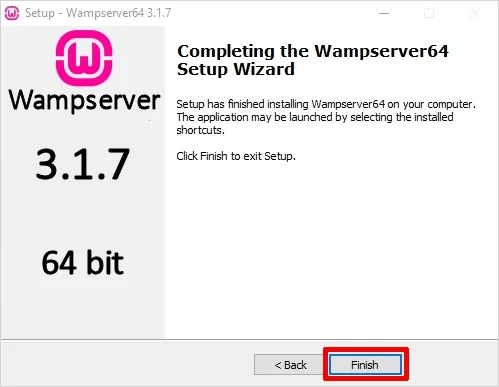
- Complete Installation:
- After installation is complete, launch WAMP by clicking on its icon from the Start Menu or Desktop.
- The WAMP icon will appear in the system tray. A green icon indicates that the server is running correctly.
Using WAMP:
- Accessing localhost: Open your browser and type
localhostor127.0.0.1to access the WAMP homepage. - Adding Projects: Place your web project files in the
wwwfolder within the WAMP installation directory. - Using phpMyAdmin: Access
phpMyAdminby visitinglocalhost/phpmyadminin your browser to manage MySQL databases.
Troubleshooting:
- Check Port Conflicts: Ensure that port 80 (used by Apache) is not in use by other software like Skype or IIS.
- Check WAMP Icon Color: The WAMP icon changes color to indicate status:
- Green: Server is running correctly.
- Orange: Some services are running, but not all.
- Red: Server is stopped; try restarting WAMP.
Once installed, WAMP allows you to develop and test web applications locally before deploying them to a live server.
How to Configure a PHP Environment
Configuring a PHP environment is essential for developing and testing PHP applications on your computer. This guide will walk you through setting up and configuring PHP with essential tools and configurations.
Step 1: Install PHP
We already discussed about installing previously See Here
Step 2: Configure PHP Environment Variables (Windows)
- Open the System Properties by searching for "Environment Variables" in the Windows search bar.
- Edit the PATH variable and add the path to your PHP folder (e.g.,
C:\php). - Open a new command prompt and type
php -vto confirm the installation.
Step 3: Configure the php.ini File
The php.ini file is the main configuration file for PHP. Here are some common
configurations:
- Enable Error Reporting: For development, enable error reporting by setting:
display_errors = On - Set Timezone: Configure your timezone:
date.timezone = "America/New_York" - Memory Limit: Set the maximum memory PHP can use:
memory_limit = 128M - File Uploads: Adjust the max file upload size if needed:
upload_max_filesize = 50M
Step 4: Install and Configure a Web Server
PHP needs to run on a web server, such as Apache or Nginx:
- Apache: If using WAMP or XAMPP, Apache is preconfigured. Add this to
httpd.conf:LoadModule php_module "C:/php/php8apache2_4.dll" - Nginx: Configure
nginx.confto point to your PHP processor.
Step 5: Test Your PHP Environment
- Create a new file in your web server's root directory named
info.php. - Add the following code to the file:
<?php phpinfo(); ?> - Open a browser and navigate to
http://localhost/info.phpto see the PHP info page, which confirms PHP is working.
Additional Tips:
- Enable Extensions: Enable necessary extensions (e.g., MySQL, cURL) by
uncommenting them in
php.ini. - Restart Server: After making changes to
php.ini, restart your server to apply the configurations. - Development vs. Production: Adjust configurations for security when moving to
production, such as setting
display_errors = Off.
Following these steps will help you set up and configure a PHP environment for local development, allowing you to build and test PHP applications efficiently.
Embedding PHP in a Web Page
PHP can be embedded within HTML to create dynamic web pages. PHP code is executed on the server, and the resulting output is sent to the browser. This guide explains how to include PHP in an HTML document.
Basic Syntax for Embedding PHP
PHP code is embedded within HTML using <?php ?> tags. Here’s a simple example:
<?php echo "Hello, World!"; ?>The above code will output "Hello, World!" to the web page when processed by the PHP server.
Example: Embedding PHP Within HTML
In practice, you can mix HTML and PHP code to display content dynamically. Here’s an example:
<html>
<head>
<title>PHP Embedded Page</title>
</head>
<body>
<h1>Welcome to My Website</h1>
<p>Today’s date is: <?php echo date("l, F j, Y"); ?></p>
<p>Here is a random number: <?php echo rand(1, 100); ?></p>
</body>
</html>In this example:
- Date Display: PHP generates the current date using the
date()function. - Random Number: PHP generates a random number with
rand().
Using PHP for Conditional Content
You can also use PHP to show different content based on conditions. For example:
<p>Welcome, <?php
if (date("H") < 12) {
echo "Good Morning!";
} else {
echo "Good Afternoon!";
}
?></p>Tips for Embedding PHP in Web Pages
- Save as .php: Make sure to save the file with a
.phpextension for the server to process PHP code. - Use Echo for Output: PHP code can print text to the HTML output using
echoorprint. - Server Requirement: PHP code will only execute on a server configured to run PHP (e.g., a WAMP, LAMP, or XAMPP server).
Embedding PHP in HTML allows you to create dynamic content, enhancing the functionality and interactivity of web pages.
Understanding PHP Tokens
In PHP, a token is the smallest unit of a program, including keywords, identifiers, operators, and punctuation. Understanding tokens is essential for grasping how PHP code is parsed and executed.
Types of Tokens in PHP
PHP tokens can be categorized into several types:
1. Keywords
Keywords are reserved words in PHP that have special meanings and are used to perform various functions. Examples include:
if, else, while, for, function, return2. Identifiers
Identifiers are names given to variables, functions, classes, and other entities. They must start with a letter or an underscore. Examples:
$name, $age, getDetails()3. Constants
Constants are fixed values that cannot be changed during script execution. Examples include numerical, string, and predefined constants:
10, "Hello", PHP_VERSIONRead more about constants : See Here
4. Operators
Operators are symbols that perform operations on variables and values. PHP has various types of operators:
- Arithmetic Operators:
+, -, *, / - Comparison Operators:
==, !=, <, > - Logical Operators:
&& (and), || (or), ! (not)
Read more about Operators : See Here
5. Separators (Punctuation)
Separators, also known as delimiters or punctuation, are symbols used to structure PHP code. Examples include:
; , . ( ) { } [ ]6. Comments
Comments are non-executable lines in PHP used to describe the code. They come in single-line and multi-line forms:
// Single-line comment
/* Multi-line comment */Read more about Comments : See Here
Examples of PHP Tokens in Code
Let’s look at a PHP code snippet to identify various tokens:
<?php
$number = 10; // $number and 10 are tokens
if ($number > 5) { // if, $, >, { are tokens
echo "Greater"; // echo and "Greater" are tokens
}
?>In this example:
ifis a keyword.$numberis an identifier.10is a constant.>is an operator.{and}are separators.
Summary
PHP tokens form the building blocks of any PHP script, helping define the structure and logic. Recognizing and understanding these tokens makes it easier to write and interpret PHP code effectively.
Understanding Variables in PHP
In PHP, a variable is a container for storing data values. Variables are essential for managing information in a program, allowing you to store, manipulate, and retrieve data.
Defining Variables
Variables in PHP are defined using the dollar sign ($) followed by the variable name. The syntax is as follows:
$variableName = value;Variable Naming Rules
When naming variables, you must follow certain rules:
- Must start with a letter or an underscore (
_). - Can contain letters, numbers, and underscores.
- Cannot contain spaces or special characters.
- Case-sensitive (e.g.,
$Varand$varare different).
Examples of Variable Declaration
Here are some examples of variable declarations in PHP:
$name = "John"; // String variable
$age = 25; // Integer variable
$height = 5.9; // Float variable
$isStudent = true; // Boolean variableUsing Variables
Once defined, variables can be used in expressions, functions, and output. Here’s an example:
<?php
$name = "Alice";
$age = 30;
echo "Name: " . $name . "<br>Age: " . $age; // Output: Name: Alice, Age: 30
?>Variable Scope
The scope of a variable determines where it can be accessed within the code. PHP has three main variable scopes:
- Global: Variables defined outside functions and accessible globally.
- Local: Variables defined within a function and accessible only within that function.
- Static: Local variables that maintain their value between function calls.
Read more about Variables Scope : See Here
Conclusion
Variables are a fundamental concept in PHP, allowing developers to store and manipulate data effectively. Understanding how to declare, use, and manage variables is crucial for building dynamic PHP applications.
Understanding Variable Scope in PHP
Variable scope determines the visibility and lifetime of a variable within your PHP code. Understanding variable scope is crucial for effective programming and debugging.
Types of Variable Scope
PHP has three main types of variable scope:
1. Global Scope
Variables declared outside of any function or class have global scope. They can be accessed from anywhere in the script, but not inside functions unless declared as global within the function:
<?php
$globalVar = "I am global"; // Global variable
function testGlobal() {
global $globalVar; // Declare global variable
echo $globalVar; // Access global variable
}
testGlobal(); // Output: I am global
?>2. Local Scope
Variables declared inside a function have local scope. They can only be accessed within that function:
<?php
function testLocal() {
$localVar = "I am local"; // Local variable
echo $localVar; // Accessible within the function
}
testLocal(); // Output: I am local
// echo $localVar; // This will cause an error since $localVar is not accessible here.
?>3. Static Scope
Static variables retain their value even after the function has finished executing. They are declared using the static keyword:
<?php
function countCalls() {
static $count = 0; // Static variable
$count++;
echo "This function has been called $count times.<br>";
}
countCalls(); // Output: This function has been called 1 times.
countCalls(); // Output: This function has been called 2 times.
?>Variable Scope and Superglobals
PHP also provides superglobals, which are built-in global arrays accessible from any scope. Common superglobals include:
$_GET$_POST$_SESSION$_COOKIE$_FILES$_SERVER
Superglobals can be accessed without the need for the global keyword.
Summary
Understanding variable scope in PHP helps manage the visibility and lifespan of variables effectively. By recognizing the differences between global, local, and static scopes, as well as utilizing superglobals, you can write more efficient and organized PHP code.
Understanding Constants in PHP
A constant is a simple value that cannot be changed during the execution of a script. Constants are beneficial for defining values that remain unchanged throughout your application, enhancing code readability and maintainability.
Defining Constants
Constants in PHP can be defined using the define() function. The syntax is as follows:
define("CONSTANT_NAME", value);Examples of Defining Constants
Here are examples of defining constants:
<?php
define("SITE_NAME", "My Awesome Website");
define("MAX_USERS", 100);
define("PI", 3.14159);
?>Using Constants
Once defined, constants can be used throughout your script. Unlike variables, constants do not require the dollar sign ($) prefix:
<?php
echo "Welcome to " . SITE_NAME; // Output: Welcome to My Awesome Website
echo "<br>Maximum users allowed: " . MAX_USERS; // Output: Maximum users allowed: 100
?>Characteristics of Constants
- Immutable: Once defined, the value of a constant cannot be changed.
- Global Scope: Constants are automatically global across the entire script and can be accessed from any function or class.
- No Dollar Sign: Constants do not require a dollar sign (
$) when being used.
Case Sensitivity
By default, constant names are case-sensitive. However, you can define a constant as case-insensitive by passing a third argument to the define() function:
define("MY_CONSTANT", "Value", true); // Case-insensitive constantThis allows you to access it using either MY_CONSTANT or my_constant.
Predefined Constants
PHP also provides a number of predefined constants that are built into the language, such as:
PHP_VERSION: Current PHP version.PHP_OS: Operating system PHP is running on.__LINE__: Current line number of the file.__FILE__: Full path and filename of the file.
These constants can be used without any additional definition.
Conclusion
Constants in PHP are a powerful feature that allows you to define immutable values for use throughout your script. They enhance code clarity and maintainability, making it easier to manage values that should remain constant during execution.
Understanding Data Types in PHP
Data types in PHP define the type of data a variable can hold. PHP is a loosely typed language, meaning you don’t need to declare a variable’s type explicitly; it automatically converts the type based on the value assigned. However, understanding data types is essential for effective programming and ensuring data integrity.
Basic Data Types
PHP has four main scalar data types and two compound data types:
1. Scalar Data Types
| Data Type | Description | Example |
|---|---|---|
| Integer | Whole numbers without decimal points. | 42 |
| Float | Numbers with decimal points. | 3.14 |
| String | A sequence of characters enclosed in quotes. | "Hello, World!" |
| Boolean | Represents two possible values: true or false. |
true |
2. Compound Data Types
| Data Type | Description | Example |
|---|---|---|
| Array | A collection of values of any data type. | $fruits = array("Apple", "Banana", "Cherry"); |
| Object | An instance of a class containing properties and methods. | $myCar = new Car("red"); |
Type Casting
PHP allows you to convert one data type into another using type casting. Here are some common examples:
$num = "10"; // String
$intValue = (int)$num; // Cast to Integer
$floatValue = (float)$num; // Cast to Float
Checking Data Types
You can check the data type of a variable using the gettype() function or the var_dump() function:
<?php
$var = 42;
echo gettype($var); // Output: integer
var_dump($var); // Output: int(42)
?>Type Juggling
PHP automatically converts data types when necessary, a feature known as type juggling. For example:
<?php
$number = "10"; // String
$result = $number + 5; // Automatically converted to integer
echo $result; // Output: 15
?>Conclusion
Understanding data types in PHP is crucial for writing efficient and bug-free code. While PHP's flexibility with types makes it easier to work with, knowing how to properly handle and convert data types will enhance your programming skills.
Understanding Operators in PHP
Operators are special symbols that perform operations on variables and values. PHP supports various types of operators that can be classified into several categories.
1. Arithmetic Operators
Arithmetic operators are used to perform basic mathematical operations:
| Operator | Operation | Example |
|---|---|---|
+ |
Addition | $a + $b |
- |
Subtraction | $a - $b |
* |
Multiplication | $a * $b |
/ |
Division | $a / $b |
% |
Modulus | $a % $b |
2. Assignment Operators
Assignment operators are used to assign values to variables:
| Operator | Operation | Example |
|---|---|---|
= |
Assigns the value on the right to the variable on the left | $a = 5 |
+= |
Add and assign | $a += 3; // $a is now 8 |
-= |
Subtract and assign | $a -= 2; // $a is now 6 |
*= |
Multiply and assign | $a *= 4; // $a is now 24 |
/= |
Divide and assign | $a /= 3; // $a is now 8 |
3. Comparison Operators
Comparison operators are used to compare two values:
| Operator | Operation | Example |
|---|---|---|
== |
Equal to | $a == $b |
=== |
Identical to | $a === $b |
!= |
Not equal to | $a != $b |
!== |
Not identical to | $a !== $b |
> |
Greater than | $a > $b |
< |
Less than | $a < $b |
>= |
Greater than or equal to | $a >= $b |
<= |
Less than or equal to | $a <= $b |
4. Logical Operators
Logical operators are used to combine conditional statements:
| Operator | Operation | Example |
|---|---|---|
&& |
Logical AND | ($a > 0) && ($b > 0) |
|| |
Logical OR | ($a > 0) || ($b > 0) |
! |
Logical NOT | !($a > 0) |
5. String Operators
String operators are used to concatenate strings:
| Operator | Operation | Example |
|---|---|---|
. |
Concatenation | $a . $b |
.= |
Concatenate and assign | $a .= $b; // $a becomes the concatenation of $a and $b |
Conclusion
Operators in PHP are essential for performing various operations on data. Understanding the different types of operators allows you to manipulate data effectively and write robust PHP scripts.
Understanding Comments in PHP
Comments in PHP are non-executable lines in the code. They are meant for documentation and explanation purposes, helping developers understand the code. Comments can explain what a section of code does, provide context, and clarify complex logic.
Types of Comments in PHP
PHP supports three types of comments:
| Type | Syntax | Description | Example |
|---|---|---|---|
| Single-line Comment | // or # |
Single-line comments start with // or # and continue to the end of the line. |
// This is a single-line comment# Another single-line comment
|
| Multi-line Comment | /* ... */ |
Multi-line comments start with /* and end with */, allowing comments over multiple lines. |
/*
|
Using Comments in PHP Code
Comments are helpful in explaining the functionality and logic of the code. They are ignored by the PHP interpreter and do not affect the execution.
Here’s how you might use comments in PHP:
<?php
// This is a single-line comment explaining the variable assignment
$number = 10;
/*
This is a multi-line comment.
It explains a block of code in more detail.
It can span multiple lines.
*/
$result = $number * 2; // This calculates the doubled value
?>Best Practices for Comments
- Use comments to explain complex or non-intuitive code.
- Avoid over-commenting simple or self-explanatory code.
- Maintain consistency in comment style throughout your codebase.
- Update comments if code changes to prevent outdated or incorrect explanations.
Conclusion
Comments are essential for writing clear, understandable, and maintainable code. By using comments effectively, you can make your code more accessible to others and easier to understand over time.
Understanding echo in PHP
The echo statement in PHP is used to output text, variables, HTML markup, and other content to the web page. It is one of the most common ways to display information in PHP.
Syntax
The syntax for echo is straight forward. Here is a basic example:
<?php
echo "Hello, World!";
?>This code will output the text Hello, World! to the browser.
Using echo with Variables
You can also use echo to display the value of variables. For example:
<?php
$name = "John";
echo "Hello, " . $name . "!";
?>This will output Hello, John! by concatenating the variable $name with the string.
Combining HTML and echo
The echo statement can also output HTML content. For instance:
<?php
echo "<h2>Welcome to my website!</h2>";
echo "<p>This is a paragraph.</p>";
?>This PHP code will display an <h2> heading and a <p> paragraph on the web page.
Using echo Without Parentheses
Unlike functions, echo does not require parentheses:
<?php
echo "Hello, World!";
?>However, if you prefer, you can also use parentheses:
<?php
echo("Hello, World!");
?>Both methods work the same way.
Outputting Multiple Parameters
With echo, you can pass multiple arguments separated by commas:
<?php
echo "Hello", " ", "World", "!";
?>This will output Hello World!. Note that this only works with echo and not with print.
Conclusion
The echo statement is a versatile and essential tool for displaying output in PHP. By combining echo with variables and HTML tags, you can create dynamic content for your web pages.
Understanding the print Statement in PHP
The print statement in PHP is used to output text, variables, HTML markup, and other content to the web page. While similar to echo, print has some distinct characteristics.
Syntax
The syntax for print is simple, and here is an example:
<?php
print "Hello, World!";
?>This code will output the text Hello, World! to the browser.
Difference Between echo and print
printreturns a value (1), so it can be used in expressions.echodoes not return a value.printcan only take one argument, whileechocan take multiple arguments.
Using print with Variables
Just like echo, print can display variables:
<?php
$name = "Alice";
print "Hello, " . $name . "!";
?>This will output Hello, Alice! by concatenating the variable $name with the string.
Combining HTML and print
The print statement can also output HTML content. For instance:
<?php
print "<h2>Welcome to My Website!</h2>";
print "<p>This is a paragraph.</p>";
?>This PHP code will display an <h2> heading and a <p> paragraph on the web page.
Using print with Parentheses
Unlike functions, print does not require parentheses:
<?php
print "Hello, World!";
?>However, you can also use parentheses:
<?php
print("Hello, World!");
?>Both methods work the same way.
Using print in Expressions
Since print returns a value, you can use it within expressions:
<?php
$result = (print "Hello!") + 5;
print "<p>The result is $result</p>";
?>This will output Hello! followed by The result is 6 since print returns 1.
Conclusion
The print statement in PHP is useful for outputting text and variables, especially in cases where a return value is helpful. By understanding how to use print, you can display content dynamically on your PHP web pages.
Understanding Branching Statements in PHP
Branching statements, also known as conditional statements, allow your code to make decisions based on certain conditions. They are essential for creating dynamic behavior in PHP programs.
If Statement
The if statement checks a condition and executes code if the condition is true.
<?php
$age = 18;
if ($age >= 18) {
echo "You are eligible to vote.";
}
?>In this example, if $age is 18 or greater, it will print You are eligible to vote..
If-Else Statement
The if-else statement provides an alternative path if the if condition is false.
<?php
$score = 75;
if ($score >= 50) {
echo "You passed.";
} else {
echo "You failed.";
}
?>If $score is 50 or higher, it will print You passed. Otherwise, it will print You failed.
If-Elseif-Else Statement
The if-elseif-else statement checks multiple conditions sequentially.
<?php
$grade = 85;
if ($grade >= 90) {
echo "A";
} elseif ($grade >= 80) {
echo "B";
} elseif ($grade >= 70) {
echo "C";
} else {
echo "F";
}
?>This code checks each condition, outputting the grade based on the $grade value.
Switch Statement
The switch statement is useful for checking one variable against multiple possible values.
<?php
$day = "Wednesday";
switch ($day) {
case "Monday":
echo "Start of the week!";
break;
case "Wednesday":
echo "Midweek day!";
break;
case "Friday":
echo "Almost weekend!";
break;
default:
echo "Have a nice day!";
}
?>This code will output Midweek day! since the value of $day is Wednesday.
Alternative Syntax for Control Structures
PHP also provides an alternative syntax for branching statements that’s often used in templates:
<?php if ($age >= 18): ?>
<p>You are eligible to vote.</p>
<?php else: ?>
<p>You are not eligible to vote.</p>
<?php endif; ?>This alternative syntax is helpful for readability, especially in HTML-heavy PHP files.
Conclusion
Branching statements are essential for creating logic and decision-making in PHP programs. By using if, if-else, if-elseif-else, and switch statements, you can control the flow of your code based on specific conditions.
Understanding Looping Statements in PHP
Looping statements allow you to execute a block of code multiple times. In PHP, there are several types of loops, each useful in different scenarios.
while Loop
The while loop runs as long as a specified condition is true.
<?php
$count = 1;
while ($count <= 5) {
echo "Count: $count<br>";
$count++;
}
?>This loop will output Count: 1 to Count: 5, incrementing the count each time until the condition is no longer true.
do-while Loop
The do-while loop is similar to while but guarantees at least one execution of the code block.
<?php
$count = 1;
do {
echo "Count: $count<br>";
$count++;
} while ($count <= 5);
?>This loop also outputs Count: 1 to Count: 5, but will always run at least once, even if the condition is initially false.
for Loop
The for loop is commonly used for a specific number of iterations, with a counter that is initialized, tested, and updated in one line.
<?php
for ($i = 1; $i <= 5; $i++) {
echo "Iteration: $i<br>";
}
?>This loop will output Iteration: 1 to Iteration: 5, incrementing $i after each loop iteration.
foreach Loop
The foreach loop is designed to work with arrays, iterating over each element in the array.
<?php
$colors = array("Red", "Green", "Blue");
foreach ($colors as $color) {
echo "Color: $color<br>";
}
?>This loop will output Color: Red, Color: Green, and Color: Blue, iterating over each element in the $colors array.
Loop Control Statements
PHP includes control statements to manage loop flow:
break: Exits the loop entirely.continue: Skips the current iteration and moves to the next one.
Examples:
<?php
// Using break
for ($i = 1; $i <= 5; $i++) {
if ($i == 3) break;
echo "Iteration: $i<br>";
}
// Using continue
for ($i = 1; $i <= 5; $i++) {
if ($i == 3) continue;
echo "Iteration: $i<br>";
}
?>The first loop will stop at Iteration: 2 due to break, and the second loop will skip Iteration: 3 due to continue.
Conclusion
Looping statements in PHP enable repetitive tasks, whether by using while, do-while, for, or foreach. Loop control statements like break and continue offer additional flexibility for more complex tasks.
Introduction to Functions in PHP
Functions in PHP are reusable blocks of code that perform a specific task. They help in organizing and simplifying code, making it easier to maintain and debug.
What is a Function?
A function is a block of code designed to perform a particular task. Functions are executed only when they are called or invoked. PHP has many built-in functions, but you can also create your own.
Defining a Function
To define a function in PHP, use the function keyword, followed by the name of the function, parentheses, and curly braces:
<?php
function sayHello() {
echo "Hello, World!";
}
?>In this example, a function named sayHello is defined. It outputs Hello, World! when called.
Calling a Function
To call a function, simply use its name followed by parentheses:
<?php
sayHello();
?>Functions with Parameters
Functions can take parameters to accept input values. These parameters are specified in the parentheses:
<?php
function greet($name) {
echo "Hello, $name!";
}
greet("Alice");
?>In this example, the greet function takes one parameter, $name, and uses it in the output.
Functions with Multiple Parameters
Functions can have multiple parameters, separated by commas:
<?php
function add($a, $b) {
return $a + $b;
}
$result = add(5, 10);
echo "The sum is: $result";
?>The add function takes two parameters, adds them, and returns the result.
Returning Values from a Function
Functions can return a value using the return keyword:
<?php
function multiply($x, $y) {
return $x * $y;
}
$product = multiply(3, 4);
echo "The product is: $product";
?>The multiply function returns the product of $x and $y, which is then stored in $product.
Default Parameter Values
PHP functions can have default parameter values, which are used if no arguments are provided:
<?php
function greet($name = "Guest") {
echo "Hello, $name!";
}
greet();
greet("Bob");
?>In this example, the greet function has a default value of "Guest" for the $name parameter.
Conclusion
Functions in PHP are powerful tools that help make your code more efficient and manageable. By understanding how to define, call, and use functions with parameters and return values, you can build more dynamic and reusable code.
Predefined Functions in PHP
PHP provides many built-in functions that can simplify your code for different tasks, such as handling strings, arrays, and dates.
String Functions
| Function | Description | Example |
|---|---|---|
strlen() |
Returns the length of a string. | strlen("Hello"); // Outputs: 5 |
strtolower() |
Converts a string to lowercase. | strtolower("HELLO"); // Outputs: hello |
strtoupper() |
Converts a string to uppercase. | strtoupper("hello"); // Outputs: HELLO |
substr() |
Returns a part of a string. | substr("Hello, World!", 7, 5); // Outputs: World |
Here’s the list of most commonly used String Function Click Here
Math Functions
| Function | Description | Example |
|---|---|---|
abs() |
Returns the absolute (positive) value of a number. | abs(-15); // Outputs: 15 |
ceil() |
Rounds a number up to the nearest integer. | ceil(4.3); // Outputs: 5 |
floor() |
Rounds a number down to the nearest integer. | floor(4.7); // Outputs: 4 |
round() |
Rounds a number to the nearest integer. | round(5.5); // Outputs: 6 |
max() |
Returns the largest value from a list of numbers. | max(1, 3, 7, 2); // Outputs: 7 |
min() |
Returns the smallest value from a list of numbers. | min(1, 3, 7, 2); // Outputs: 1 |
pow() |
Returns the value of a number raised to the power of another number. | pow(2, 3); // Outputs: 8 |
sqrt() |
Returns the square root of a number. | sqrt(16); // Outputs: 4 |
rand() |
Generates a random integer. | rand(1, 100); // Outputs a random number between 1 and 100 |
sin() |
Returns the sine of a number (in radians). | sin(pi()/2); // Outputs: 1 |
cos() |
Returns the cosine of a number (in radians). | cos(0); // Outputs: 1 |
tan() |
Returns the tangent of a number (in radians). | tan(pi()/4); // Outputs: 1 |
log() |
Returns the natural logarithm (base e) of a number. | log(1); // Outputs: 0 |
exp() |
Returns e raised to the power of a number. | exp(1); // Outputs: 2.718281828459 |
deg2rad() |
Converts degrees to radians. | deg2rad(180); // Outputs: 3.14159 |
rad2deg() |
Converts radians to degrees. | rad2deg(pi()); // Outputs: 180 |
Array Functions
| Function | Description | Example |
|---|---|---|
count() |
Returns the number of elements in an array. | count([1, 2, 3]); // Outputs: 3 |
array_merge() |
Merges one or more arrays. | array_merge([1, 2], [3, 4]); // Outputs: [1, 2, 3, 4] |
in_array() |
Checks if a value exists in an array. | in_array(3, [1, 2, 3]); // Outputs: true |
sort() |
Sorts an array in ascending order. | sort($array); // Sorts $array |
Here’s the list of most commonly used Array Functions Click Here
Conclusion
These tables highlight some of the most frequently used predefined functions in PHP for handling strings, performing mathematical operations, and managing arrays. Each function helps simplify coding tasks significantly.
User-Defined Functions in PHP
In addition to using built-in functions, PHP allows developers to create their own functions, called user-defined functions. These functions make your code more organized, reusable, and easier to maintain.
Syntax of a User-Defined Function
A user-defined function in PHP is declared using the function keyword, followed by the function name and a set of parentheses. Here’s the basic syntax:
<?php
function functionName() {
// Code to be executed
}
?>Examples of User-Defined Functions
Simple Function
This function prints a greeting message:
<?php
function sayHello() {
echo "Hello, World!";
}
sayHello(); // Outputs: Hello, World!
?>Function with Parameters
This function accepts parameters and prints a personalized greeting:
<?php
function greet($name) {
echo "Hello, $name!";
}
greet("Alice"); // Outputs: Hello, Alice!
greet("Bob"); // Outputs: Hello, Bob!
?>Function with Return Value
This function calculates the sum of two numbers and returns the result:
<?php
function add($a, $b) {
return $a + $b;
}
$result = add(5, 10);
echo "The sum is: " . $result; // Outputs: The sum is: 15
?>Function with Default Parameters
This function has a default value for one of its parameters:
<?php
function greetWithDefault($name = "Guest") {
echo "Hello, $name!";
}
greetWithDefault(); // Outputs: Hello, Guest!
greetWithDefault("Charlie"); // Outputs: Hello, Charlie!
?>Conclusion
User-defined functions in PHP are powerful tools that help structure your code more efficiently. They are especially useful when you need to perform the same operation multiple times in a program.
Recursion in PHP
Recursion is a programming technique where a function calls itself directly or indirectly to solve a problem. It is useful for problems that can be broken down into simpler, identical sub-problems.
How Recursion Works
A recursive function must have a termination condition to prevent infinite loops. This condition, called the base case, stops the function from calling itself when a certain condition is met.
Example: Factorial Function
One common example of a recursive function is calculating the factorial of a number. The factorial of n (denoted as n!) is the product of all positive integers less than or equal to n. It is defined as:
0! = 1n! = n * (n - 1)!forn > 0
<?php
function factorial($n) {
if ($n === 0) {
return 1; // Base case
} else {
return $n * factorial($n - 1); // Recursive call
}
}
echo "Factorial of 5 is: " . factorial(5); // Outputs: 120
?>Example: Fibonacci Sequence
The Fibonacci sequence is another classic example of recursion. The sequence is defined as:
F(0) = 0F(1) = 1F(n) = F(n - 1) + F(n - 2)forn > 1
<?php
function fibonacci($n) {
if ($n === 0) {
return 0; // Base case
} elseif ($n === 1) {
return 1; // Base case
} else {
return fibonacci($n - 1) + fibonacci($n - 2); // Recursive call
}
}
echo "Fibonacci of 6 is: " . fibonacci(6); // Outputs: 8
?>Advantages and Disadvantages of Recursion
Advantages
- Simplifies code for problems that have a natural recursive structure, such as tree traversal and mathematical sequences.
- Easy to write and understand for problems that are inherently recursive.
Disadvantages
- Can be less efficient and use more memory due to the overhead of function calls.
- Risk of stack overflow if the recursion depth is too large.
Conclusion
Recursion is a powerful tool in PHP, but it should be used with caution. For problems that can be solved iteratively, using loops may be more efficient. However, for problems like traversing hierarchical structures, recursion is often the most natural and elegant solution.
Introduction to Strings in PHP
In PHP, a string is a sequence of characters used to store and manipulate text. Strings can be created using single quotes or double quotes, and they can include letters, numbers, symbols, or even whitespace.
Creating Strings
Strings can be declared in two main ways:
- Single quotes:
'This is a string' - Double quotes:
"This is another string"
Examples
<?php
// Using single quotes
$string1 = 'Hello, World!';
// Using double quotes
$string2 = "Hello, PHP!";
// Displaying strings
echo $string1; // Outputs: Hello, World!
echo "<br>";
echo $string2; // Outputs: Hello, PHP!
?>String Concatenation
In PHP, you can join two or more strings using the concatenation operator .:
<?php
$firstName = "John";
$lastName = "Doe";
$fullName = $firstName . " " . $lastName;
echo $fullName; // Outputs: John Doe
?>Escaping Characters
When using single or double quotes, you may need to escape certain characters. This is done using a backslash \:
<?php
// Using single quotes with escape characters
$string = 'It\'s a sunny day!'; // Escapes the single quote
// Using double quotes with escape characters
$quote = "He said, \"Hello, World!\""; // Escapes the double quotes
echo $string; // Outputs: It's a sunny day!
echo "<br>";
echo $quote; // Outputs: He said, "Hello, World!"
?>Conclusion
Strings are a fundamental part of PHP programming, used in almost every application. Understanding how to work with strings and use built-in string functions is essential for handling and manipulating text efficiently.
String Interpolation in PHP
String interpolation in PHP allows variables to be embedded directly within double-quoted strings, making it easier to construct complex strings. This feature works only with double quotes and not with single quotes.
Syntax of String Interpolation
When using double quotes, PHP automatically parses variables and replaces them with their values:
<?php
$name = "Alice";
echo "Hello, $name!"; // Outputs: Hello, Alice!
?>Using Curly Braces for Complex Expressions
To handle more complex expressions or when embedding an array element, curly braces {} can be used:
<?php
$fruit = "apple";
echo "I have an {$fruit}s."; // Outputs: I have apples.
$items = ["pen", "notebook", "eraser"];
echo "I bought a {$items[1]}."; // Outputs: I bought a notebook.
?>Difference Between Single and Double Quotes
String interpolation works with double quotes but not with single quotes. Single quotes treat variables as plain text:
<?php
$color = "blue";
echo "The sky is $color."; // Outputs: The sky is blue.
echo '<br>';
echo 'The sky is $color.'; // Outputs: The sky is $color.
?>Example of String Interpolation
Here’s a simple example that demonstrates how string interpolation can be used to construct dynamic messages:
<?php
$user = "Bob";
$age = 25;
echo "Hello, $user! You are $age years old."; // Outputs: Hello, Bob! You are 25 years old.
?>Interpolation with Array Elements
Interpolation can also be used with elements of an array:
<?php
$colors = ["red", "green", "blue"];
echo "My favorite color is {$colors[2]}."; // Outputs: My favorite color is blue.
?>Conclusion
String interpolation in PHP is a simple and effective way to include variable values within strings. It is particularly useful for making code cleaner and easier to understand, especially when dealing with dynamic text.
String Operators in PHP
In PHP, there are several operators specifically designed for working with strings. The most commonly used string operators are concatenation and string comparison operators.
Concatenation Operator
The concatenation operator . is used to combine two or more strings into one. You can concatenate strings using this operator as follows:
<?php
$string1 = "Hello, ";
$string2 = "world!";
$result = $string1 . $string2;
echo $result; // Outputs: Hello, world!
?>Concatenation Assignment Operator
PHP also provides a concatenation assignment operator .= which appends a string to an existing string variable:
<?php
$message = "Hello";
$message .= ", world!";
echo $message; // Outputs: Hello, world!
?>String Comparison Operators
PHP includes comparison operators that can be used to compare strings. The following operators are commonly used:
==: Checks if two strings are equal.===: Checks if two strings are identical (equal and of the same type).!=: Checks if two strings are not equal.<>: Checks if two strings are not equal (alternative to!=).<: Checks if one string is less than another.>: Checks if one string is greater than another.
Example of String Comparison
<?php
$stringA = "apple";
$stringB = "banana";
if ($stringA == $stringB) {
echo "$stringA is equal to $stringB.";
} else {
echo "$stringA is not equal to $stringB."; // Outputs: apple is not equal to banana.
}
?>Case Sensitivity in Comparisons
String comparisons in PHP are case-sensitive. For example:
<?php
$stringC = "Hello";
$stringD = "hello";
if ($stringC === $stringD) {
echo "Strings are identical.";
} else {
echo "Strings are not identical."; // Outputs: Strings are not identical.
}
?>Conclusion
String operators in PHP are essential for manipulating and comparing text. The concatenation operator allows you to build strings dynamically, while comparison operators enable you to check equality and order of strings effectively.
Heredoc in PHP
Heredoc is a syntax for defining multi-line strings in PHP. It allows you to create strings that span multiple lines without the need for concatenation. Heredoc syntax is particularly useful for embedding large blocks of text, such as HTML or documentation, within your PHP code.
Syntax
The basic syntax for a Heredoc string is as follows:
<?php
$variableName = <<<EOT
This is a Heredoc string.
It can span multiple lines.
You can include variables like $variable directly in it.
EOT;
?>Example of Using Heredoc
Here is an example that demonstrates how to use Heredoc to create a multi-line string:
<?php
$name = "Alice";
$heredocString = <<<EOT
Hello, $name!
Welcome to the world of PHP.
This string spans multiple lines.
EOT;
echo $heredocString;
/* Outputs:
Hello, Alice!
Welcome to the world of PHP.
This string spans multiple lines.
*/
?>Important Notes
- The identifier used to start and end the Heredoc (e.g.,
EOT) can be any valid label, but it must match at both the start and end. - There should be no spaces or tabs before the identifier on the closing line.
- Variables within a Heredoc are parsed, similar to double-quoted strings.
- Heredoc can also include special characters without needing to escape them.
Using Heredoc with HTML
Heredoc is especially useful when embedding HTML code:
<?php
$html = <<<HTML
<div>
<h1>Welcome!</h1>
<p>This is a paragraph in HTML.</p>
</div>
HTML;
echo $html; // Outputs the HTML structure
?>Conclusion
Heredoc syntax provides a clean and convenient way to handle multi-line strings in PHP. It is particularly valuable when working with large text blocks or when embedding HTML directly into PHP scripts.
Predefined String Functions in PHP
PHP provides a variety of built-in functions for manipulating strings. Below is a table listing 20 common string functions along with their descriptions.
| Function | Description |
|---|---|
strlen() |
Returns the length of a string. |
strpos() |
Finds the position of the first occurrence of a substring in a string. |
str_replace() |
Replaces all occurrences of a search string with a replacement string. |
substr() |
Returns a portion of a string specified by the start and length. |
strtoupper() |
Converts a string to uppercase. |
strtolower() |
Converts a string to lowercase. |
ucfirst() |
Capitalizes the first character of a string. |
ucwords() |
Capitalizes the first character of each word in a string. |
trim() |
Strips whitespace from the beginning and end of a string. |
str_repeat() |
Repeats a string a specified number of times. |
str_split() |
Splits a string into an array by a specified delimiter. |
implode() |
Joins array elements into a single string with a specified separator. |
explode() |
Splits a string by a specified delimiter into an array. |
strrev() |
Reverses a string. |
str_pad() |
Pads a string to a certain length with another string. |
str_contains() |
Checks if a string contains a specified substring. |
str_starts_with() |
Checks if a string starts with a specified substring. |
str_ends_with() |
Checks if a string ends with a specified substring. |
htmlspecialchars() |
Converts special characters to HTML entities. |
strtok() |
Tokenizes a string using a specified delimiter. |
nl2br() |
Inserts HTML line breaks before all newlines in a string. |
Example Programs
1. Using strlen()
<?php
$string = "Hello, World!";
$length = strlen($string);
echo "The length of the string is: $length"; // Outputs: The length of the string is: 13
?>2. Using strpos()
<?php
$text = "Find the position of the word 'the'.";
$position = strpos($text, "the");
echo "The position of 'the' is: $position"; // Outputs: The position of 'the' is: 10
?>3. Using str_replace()
<?php
$original = "Hello, World!";
$replaced = str_replace("World", "PHP", $original);
echo $replaced; // Outputs: Hello, PHP!
?>4. Using substr()
<?php
$string = "Hello, World!";
$substring = substr($string, 7, 5);
echo $substring; // Outputs: World
?>5. Using strtoupper()
<?php
$string = "hello, world!";
$uppercase = strtoupper($string);
echo $uppercase; // Outputs: HELLO, WORLD!
?>6. Using trim()
<?php
$string = " Hello, World! ";
$trimmed = trim($string);
echo $trimmed; // Outputs: Hello, World!
?>7. Using str_split()
<?php
$string = "Hello, World!";
$array = str_split($string);
print_r($array); // Outputs: Array ( [0] => H [1] => e [2] => l [3] => l [4] => o [5] => , [6] => [7] => W [8] => o [9] => r [10] => l [11] => d [12] => ! )
?>8. Using implode()
<?php
$array = ['Hello', 'World'];
$string = implode(", ", $array);
echo $string; // Outputs: Hello, World
?>9. Using strrev()
<?php
$string = "Hello, World!";
$reversed = strrev($string);
echo $reversed; // Outputs: !dlroW ,olleH
?>10. Using htmlspecialchars()
<?php
$string = "Hello, World!";
$safeString = htmlspecialchars($string);
echo $safeString; // Outputs: <div>Hello, World!</div>
?>Introduction to Arrays in PHP
Arrays in PHP are used to store multiple values in a single variable. They are a powerful data structure that allows you to work with lists of data efficiently.
What is an Array?
An array is a collection of elements, where each element can be accessed using an index. PHP supports both indexed arrays and associative arrays:
- Indexed Arrays: Arrays with numeric indices, starting from 0.
- Associative Arrays: Arrays with named keys, where each key is associated with a value.
Creating Arrays
You can create arrays in PHP using the array() function or the shorthand [] syntax:
<?php
// Indexed array
$colors = array("Red", "Green", "Blue");
$fruits = ["Apple", "Banana", "Orange"];
// Associative array
$ages = array("Alice" => 25, "Bob" => 30, "Charlie" => 35);
$scores = ["Math" => 90, "Science" => 85, "English" => 95];
?>Accessing Array Elements
To access elements in an array, you use the index or key:
<?php
// Accessing elements in an indexed array
echo $colors[0]; // Outputs: Red
echo $fruits[2]; // Outputs: Orange
// Accessing elements in an associative array
echo $ages["Alice"]; // Outputs: 25
echo $scores["Science"]; // Outputs: 85
?>Modifying Arrays
You can add or change elements in an array using their index or key:
<?php
// Adding elements to an indexed array
$colors[] = "Yellow";
$fruits[1] = "Mango"; // Modifies the second element
// Adding elements to an associative array
$ages["David"] = 40;
$scores["History"] = 88;
?>Conclusion
Arrays are essential for managing lists of data in PHP, whether you are dealing with simple lists or complex collections of key-value pairs. Mastering arrays is crucial for effective programming in PHP.
Types of Arrays in PHP
PHP supports three main types of arrays:
1. Indexed Arrays
Indexed arrays use numeric indices to access their elements. The index starts from 0 for the first element and increases by 1 for each subsequent element.
Example:
<?php
// Creating an indexed array
$colors = array("Red", "Green", "Blue");
$fruits = ["Apple", "Banana", "Orange"];
// Accessing elements
echo $colors[0]; // Outputs: Red
echo $fruits[2]; // Outputs: Orange
?>2. Associative Arrays
Associative arrays use named keys to access their elements. Each key is associated with a value, allowing for more descriptive data access.
Example:
<?php
// Creating an associative array
$ages = array("Alice" => 25, "Bob" => 30, "Charlie" => 35);
$scores = ["Math" => 90, "Science" => 85, "English" => 95];
// Accessing elements
echo $ages["Alice"]; // Outputs: 25
echo $scores["Science"]; // Outputs: 85
?>3. Multidimensional Arrays
Multidimensional arrays are arrays that contain other arrays as their elements. They can be used to represent more complex data structures, like a table of data or a matrix.
Example:
<?php
// Creating a two-dimensional array
$students = array(
array("Name" => "Alice", "Age" => 25, "Grade" => "A"),
array("Name" => "Bob", "Age" => 30, "Grade" => "B"),
array("Name" => "Charlie", "Age" => 35, "Grade" => "C")
);
// Accessing elements
echo $students[0]["Name"]; // Outputs: Alice
echo $students[1]["Grade"]; // Outputs: B
?>Conclusion
Arrays in PHP come in different forms, allowing you to choose the most suitable structure based on your data requirements. Understanding indexed, associative, and multidimensional arrays is fundamental for effective data manipulation in PHP.
Inspecting Arrays in PHP
When working with arrays in PHP, you often need to inspect them to understand their structure and contents. PHP provides several functions to help with this.
1. print_r()
The print_r() function displays the structure and contents of an array in a human-readable format. It is especially useful for debugging purposes.
Example:
<?php
$fruits = array("Apple", "Banana", "Orange");
print_r($fruits);
?>Output:
Array
(
[0] => Apple
[1] => Banana
[2] => Orange
)
2. var_dump()
The var_dump() function provides detailed information about an array, including the type and length of each element. It is more comprehensive than print_r().
Example:
<?php
$ages = array("Alice" => 25, "Bob" => 30, "Charlie" => 35);
var_dump($ages);
?>Output:
array(3) {
["Alice"]=> int(25)
["Bob"]=> int(30)
["Charlie"]=> int(35)
}
3. var_export()
The var_export() function returns a parsable string representation of an array. It is similar to print_r() but can be used to recreate the array.
Example:
<?php
$scores = array("Math" => 90, "Science" => 85, "English" => 95);
var_export($scores);
?>Output:
array(
'Math' => 90,
'Science' => 85,
'English' => 95,
)
Conclusion
Using functions like print_r(), var_dump(), and var_export() can greatly aid in debugging and understanding the contents and structure of arrays in PHP. Choose the function that best suits your debugging needs.
Predefined Functions for Arrays in PHP
| Function | Description |
|---|---|
array_push() |
Adds one or more elements to the end of an array. |
array_pop() |
Removes the last element from an array and returns it. |
array_shift() |
Removes the first element from an array and returns it. |
array_unshift() |
Adds one or more elements to the beginning of an array. |
array_merge() |
Merges one or more arrays into a single array. |
array_keys() |
Returns all the keys of an array. |
array_values() |
Returns all the values of an array. |
array_key_exists() |
Checks if a specified key exists in an array. |
in_array() |
Checks if a value exists in an array. |
count() |
Returns the number of elements in an array. |
array_slice() |
Extracts a portion of an array. |
array_splice() |
Removes a portion of the array and replaces it with something else. |
sort() |
Sorts an array in ascending order. |
rsort() |
Sorts an array in descending order. |
array_reverse() |
Returns an array with elements in reverse order. |
array_unique() |
Removes duplicate values from an array. |
array_filter() |
Filters elements of an array using a callback function. |
array_map() |
Applies a callback function to each element of an array. |
array_reduce() |
Reduces an array to a single value using a callback function. |
array_search() |
Searches an array for a value and returns the key if found. |
Example Programs
1. Using array_push() and array_pop()
<?php
$stack = array("orange", "banana");
array_push($stack, "apple", "raspberry");
print_r($stack);
$fruit = array_pop($stack);
echo $fruit;
?>Output:
Dog, Cat, Horse raspberry
2. Using array_merge() and array_reverse()
<?php
$array1 = array("red", "green");
$array2 = array("blue", "yellow");
$result = array_merge($array1, $array2);
print_r($result);
$reversed = array_reverse($result);
print_r($reversed);
?>Output:
Array ( [0] => red [1] => green [2] => blue [3] => yellow ) Array ( [0] => yellow [1] => blue [2] => green [3] => red )
Iterating Arrays in PHP
There are several ways to iterate through arrays in PHP. Depending on the structure and use case of your array, you can choose from different loop constructs.
1. Using foreach Loop
The foreach loop is the easiest way to iterate through arrays. It automatically loops through each element of the array.
Example:
<?php
$colors = array("Red", "Green", "Blue");
foreach ($colors as $color) {
echo $color . "<br>";
}
$ages = array("Alice" => 25, "Bob" => 30, "Charlie" => 35);
foreach ($ages as $name => $age) {
echo "$name is $age years old.<br>";
}
?>Output:
Red
Green
Blue
Alice is 25 years old
Bob is 30
Charlie is 35
2. Using for Loop
The for loop is useful when you have an indexed array and you need to use the index to iterate through the elements.
Example:
<?php
$fruits = array("Apple", "Banana", "Orange");
for ($i = 0; $i < count($fruits); $i++) {
echo $fruits[$i] . "<br>";
}
?>Output:
Apple
Banana
Orange
3. Using while Loop
The while loop can be used to iterate through an array using a manual index.
Example:
<?php
$animals = array("Dog", "Cat", "Horse");
$i = 0;
while ($i < count($animals)) {
echo $animals[$i] . "<br>";
$i++;
}
?>Output:
Dog
Cat
Horse
4. Using do-while Loop
The do-while loop is similar to the while loop but guarantees that the loop will run at least once.
Example:
<?php
$numbers = array(1, 2, 3);
$i = 0;
do {
echo $numbers[$i] . "<br>";
$i++;
} while ($i < count($numbers));
?>Output:
1
2
3
Conclusion
PHP provides multiple ways to iterate through arrays, each suited for different situations. The foreach loop is the most common and user-friendly for working with arrays, while for and while loops offer more control over the iteration process.
Super Global Variables in PHP
Super Global Variables in PHP are built-in variables that are available in all scopes throughout a script. They are initialized by PHP and can be used anywhere in your script.
List of Super Global Variables
$_GLOBALS: References all variables available in global scope.$_SERVER: Contains information about the server and environment.$_REQUEST: Contains data from$_GET,$_POST, and$_COOKIE.$_POST: Used to collect form data sent via HTTP POST.$_GET: Used to collect form data sent via HTTP GET.$_FILES: Used to manage file uploads.$_ENV: Contains environment variables.$_COOKIE: Contains cookie variables.$_SESSION: Contains session variables.
Examples of Super Global Variables
1. Using $_SERVER
$_SERVER contains information like headers, paths, and script locations.
<?php
echo "Server Name: " . $_SERVER['SERVER_NAME'] . "<br>";
echo "Server Address: " . $_SERVER['SERVER_ADDR'] . "<br>";
echo "Request Method: " . $_SERVER['REQUEST_METHOD'] . "<br>";
?>2. Using $_GET and $_POST
These variables are used to collect data from forms. $_GET retrieves data sent with a GET request, and $_POST retrieves data sent with a POST request.
Example: Form using $_POST:
<form method="post">
Name: <input type="text" name="name">
<input type="submit">
</form>
<?php
if ($_SERVER["REQUEST_METHOD"] == "POST") {
$name = $_POST['name'];
echo "Hello, " . htmlspecialchars($name);
}
?>3. Using $_SESSION
Sessions store user information to be used across multiple pages.
<?php
session_start();
$_SESSION['username'] = "JohnDoe";
echo "Session username is: " . $_SESSION['username'];
?>Conclusion
Super Global Variables are essential for handling form data, managing sessions, accessing server information, and more. Understanding how to use them effectively will help you build robust PHP applications.
Importing User Input in PHP
In PHP, you can collect input from users through forms. This input can be imported using several super global arrays such as $_GET, $_POST, and $_REQUEST. Each of these arrays has different use cases for handling user-submitted data.
1. Using $_GET to Collect Data
$_GET is used to collect data sent via the HTTP GET method. Data is passed as query parameters in the URL.
Example: URL: example.php?name=John&age=25
<?php
echo "Name: " . $_GET['name']; // Outputs: John
echo "<br>";
echo "Age: " . $_GET['age']; // Outputs: 25
?>2. Using $_POST to Collect Data
$_POST is used to collect data sent via the HTTP POST method, typically from an HTML form. Data is not visible in the URL.
HTML Form using POST:
<form method="POST">
Name: <input type="text" name="name"><br>
Age: <input type="text" name="age"><br>
<input type="submit" value="Submit">
</form>Processing the Form Data with $_POST:
<?php
if ($_SERVER["REQUEST_METHOD"] == "POST") {
$name = $_POST['name'];
$age = $_POST['age'];
echo "Name: $name<br>";
echo "Age: $age<br>";
}
?>3. Using $_REQUEST to Collect Data
$_REQUEST is a combination of $_GET, $_POST, and $_COOKIE data. It can collect data from any method (GET, POST, or COOKIE).
Example using $_REQUEST:
<form method="POST">
Name: <input type="text" name="name"><br>
Age: <input type="text" name="age"><br>
<input type="submit" value="Submit">
</form>Processing the Form Data with $_REQUEST:
<?php
if ($_SERVER["REQUEST_METHOD"] == "POST") {
$name = $_REQUEST['name'];
$age = $_REQUEST['age'];
echo "Name: $name<br>";
echo "Age: $age<br>";
}
?>4. Importing Data from a URL
If you pass data via the URL using ?name=John&age=25, you can retrieve it with $_GET. However, if the data is passed using the POST method, $_POST is used.
Example: Collecting data via GET (URL) and POST (form submission).
<?php
if ($_SERVER["REQUEST_METHOD"] == "GET") {
$name = $_GET['name'];
echo "Name from GET: $name<br>";
}
if ($_SERVER["REQUEST_METHOD"] == "POST") {
$name = $_POST['name'];
echo "Name from POST: $name<br>";
}
?>Conclusion
PHP provides multiple methods for importing user input, including the $_GET, $_POST, and $_REQUEST superglobal arrays. Choosing the appropriate method depends on how you want to send and process the data in your web applications.
Connecting to a Database in PHP
In PHP, you can connect to a MySQL database using the mysqli extension or PDO (PHP Data Objects). Here, we'll focus on the mysqli extension.
Step 1: Database Configuration
Before you begin, ensure that you have a MySQL database and the necessary credentials:
- Host: Typically 'localhost' if running locally.
- Username: The username for accessing the database (e.g., 'root').
- Password: The password associated with the username.
- Database Name: The name of the database you want to connect to.
Step 2: PHP Code to Connect to the Database
The following PHP code shows how to connect to a MySQL database using the mysqli_connect() function.
<?php
$servername = "localhost";
$username = "root";
$password = "";
$dbname = "mydatabase";
$conn = new mysqli($servername, $username, $password, $dbname);
if ($conn->connect_error) {
die("Connection failed: " . $conn->connect_error);
}
echo "Connected successfully to the database";
?>Step 3: Check for Connection Errors
Always check for connection errors to handle potential issues, such as incorrect credentials or unreachable database server. If the connection fails, an error message is displayed.
<?php
if ($conn->connect_error) {
die("Connection failed: " . $conn->connect_error);
}
?>Step 4: Closing the Connection
After you have finished interacting with the database, it's important to close the connection to free up resources.
<?php
$conn->close();
?>Conclusion
By using the mysqli extension in PHP, you can easily connect to a MySQL database, handle connection errors, and perform queries. Always ensure that you close the connection when done to avoid unnecessary resource consumption.
Making SQL Queries in PHP
In PHP, you can interact with a MySQL database by executing SQL queries using the mysqli extension. The queries can be used to retrieve, insert, update, or delete data in the database.
1. SELECT Query
The SELECT query is used to retrieve data from the database.
<?php
$servername = "localhost";
$username = "root";
$password = "";
$dbname = "mydatabase";
$conn = new mysqli($servername, $username, $password, $dbname);
if ($conn->connect_error) {
die("Connection failed: " . $conn->connect_error);
}
$sql = "SELECT id, name, age FROM users";
$result = $conn->query($sql);
if ($result->num_rows > 0) {
// Output data of each row
while($row = $result->fetch_assoc()) {
echo "id: " . $row["id"]. " - Name: " . $row["name"]. " - Age: " . $row["age"]. "<br>";
}
} else {
echo "0 results";
}
$conn->close();
?>2. INSERT Query
The INSERT query is used to insert new records into a table.
<?php
$servername = "localhost";
$username = "root";
$password = "";
$dbname = "mydatabase";
$conn = new mysqli($servername, $username, $password, $dbname);
if ($conn->connect_error) {
die("Connection failed: " . $conn->connect_error);
}
$sql = "INSERT INTO users (name, age) VALUES ('John Doe', 30)";
if ($conn->query($sql) === TRUE) {
echo "New record created successfully";
} else {
echo "Error: " . $sql . "<br>" . $conn->error;
}
$conn->close();
?>3. UPDATE Query
The UPDATE query is used to modify existing records in a table.
<?php
$servername = "localhost";
$username = "root";
$password = "";
$dbname = "mydatabase";
$conn = new mysqli($servername, $username, $password, $dbname);
if ($conn->connect_error) {
die("Connection failed: " . $conn->connect_error);
}
$sql = "UPDATE users SET age=31 WHERE name='John Doe'";
if ($conn->query($sql) === TRUE) {
echo "Record updated successfully";
} else {
echo "Error: " . $sql . "<br>" . $conn->error;
}
$conn->close();
?>4. DELETE Query
The DELETE query is used to delete records from a table.
<?php
$servername = "localhost";
$username = "root";
$password = "";
$dbname = "mydatabase";
$conn = new mysqli($servername, $username, $password, $dbname);
if ($conn->connect_error) {
die("Connection failed: " . $conn->connect_error);
}
$sql = "DELETE FROM users WHERE name='John Doe'";
if ($conn->query($sql) === TRUE) {
echo "Record deleted successfully";
} else {
echo "Error: " . $sql . "<br>" . $conn->error;
}
$conn->close();
?>Conclusion
Using PHP and the mysqli extension, you can easily execute SQL queries to interact with your MySQL database. The SELECT query allows you to retrieve data, while the INSERT, UPDATE, and DELETE queries are used to manipulate data in your database.
Integrating Forms and Databases in PHP
This example demonstrates how to create an HTML form to collect user input, then insert that input into a MySQL database using PHP.
Step 1: Create the Database Table
Before integrating the form, ensure you have a MySQL database and a table to store the data. Below is an SQL query to create a `users` table.
CREATE TABLE users (
id INT(6) UNSIGNED AUTO_INCREMENT PRIMARY KEY,
name VARCHAR(50) NOT NULL,
age INT(3) NOT NULL
);Step 2: Create the HTML Form
The following HTML form collects the name and age of a user:
<form method="POST" action="insert.php">
<label for="name">Name:</label>
<input type="text" id="name" name="name" required><br>
<label for="age">Age:</label>
<input type="number" id="age" name="age" required><br>
<input type="submit" value="Submit">
</form>Step 3: PHP Script to Insert Data into Database
When the user submits the form, the data is sent to a PHP script (in this case, `insert.php`) using the POST method. Below is the PHP code for `insert.php`:
<?php
$servername = "localhost";
$username = "root";
$password = "";
$dbname = "mydatabase";
$conn = new mysqli($servername, $username, $password, $dbname);
if ($conn->connect_error) {
die("Connection failed: " . $conn->connect_error);
}
$name = $_POST['name'];
$age = $_POST['age'];
$sql = "INSERT INTO users (name, age) VALUES ('$name', '$age')";
if ($conn->query($sql) === TRUE) {
echo "New record created successfully";
} else {
echo "Error: " . $sql . "<br>" . $conn->error;
}
$conn->close();
?>Step 4: Form Submission and Data Insertion
When the form is submitted, the data is sent to the PHP script using the POST method. The script processes the input, inserts it into the `users` table, and provides feedback to the user:
New record created successfullySecurity Considerations: SQL Injection Prevention
To protect your application from SQL injection attacks, you should use prepared statements or parameterized queries instead of directly inserting user input into the SQL query. Here's an updated example using prepared statements:
<?php
$servername = "localhost";
$username = "root";
$password = "";
$dbname = "mydatabase";
$conn = new mysqli($servername, $username, $password, $dbname);
if ($conn->connect_error) {
die("Connection failed: " . $conn->connect_error);
}
$name = $_POST['name'];
$age = $_POST['age'];
$stmt = $conn->prepare("INSERT INTO users (name, age) VALUES (?, ?)");
$stmt->bind_param("si", $name, $age); // "si" means string and integer
if ($stmt->execute()) {
echo "New record created successfully";
} else {
echo "Error: " . $stmt->error;
}
$stmt->close();
$conn->close();
?>Conclusion
By using an HTML form and PHP, you can collect user input and store it in a MySQL database. This process involves creating the form, sending the data to a PHP script, and using SQL queries to insert the data into the database. Always remember to secure your application by using prepared statements to prevent SQL injection attacks.
Working with Cookies in PHP
In PHP, cookies are small pieces of data stored on the user's browser. They are commonly used for tracking user sessions, storing user preferences, or any other small data that should persist across pages or visits.
1. Setting a Cookie
You can set a cookie using the setcookie() function. The syntax is:
setcookie(name, value, expire, path, domain, secure, httponly);Here's an example of how to set a cookie:
<?php
// Set a cookie named "user" with value "John Doe" that expires in 1 hour
setcookie("user", "John Doe", time() + 3600, "/"); // 3600 = 1 hour
echo "Cookie has been set!";
?>2. Retrieving a Cookie
To retrieve the value of a cookie, use the $_COOKIE superglobal array. Here's an example:
<?php
if(isset($_COOKIE["user"])) {
echo "User cookie value: " . $_COOKIE["user"];
} else {
echo "Cookie named 'user' is not set!";
}
?>3. Deleting a Cookie
To delete a cookie, you can set its expiration time to a past time. This will instruct the browser to remove it. Here's how to delete the "user" cookie:
<?php
// Set the cookie to expire in the past to delete it
setcookie("user", "", time() - 3600, "/");
echo "Cookie has been deleted!";
?>4. Cookie Expiration
The expiration time is important because it determines how long the cookie will last. If the expiration time is not set, the cookie will be a session cookie, which means it will expire once the browser is closed. Here's an example of setting a cookie that expires in 30 days:
<?php
// Set a cookie with a 30-day expiration time
setcookie("user", "Jane Doe", time() + (30 * 24 * 60 * 60), "/"); // 30 days
echo "Cookie with 30 days expiration has been set!";
?>5. Important Notes on Cookies
- The
setcookie()function must be called before any output (like HTML or echo statements) is sent to the browser. Otherwise, the cookie won't be set. - Cookies are sent to the server with every HTTP request, so they can affect the performance of your website if too many cookies are used.
- Cookies are stored in the user's browser, so they can be cleared by the user at any time.
- For security reasons, always use
httponlyandsecureflags when using cookies to store sensitive information.
Conclusion
Cookies are a useful tool for storing small pieces of data on the user's browser. They allow for persistent data storage and can be used for things like tracking sessions or storing preferences. However, it's important to use them securely and ensure that sensitive information is not stored in cookies without proper safeguards.
Working with Sessions in PHP
In PHP, sessions are used to store user data across multiple pages. Unlike cookies, session data is stored on the server, and only a session ID is stored in the user's browser. Sessions are commonly used to maintain user login states, shopping cart information, and other user-specific data.
1. Starting a Session
To begin using sessions in PHP, you must call session_start() at the top of your PHP file, before any HTML output. This function creates or resumes a session.
<?php
// Start the session
session_start();
?>2. Storing Data in a Session
You can store data in a session using the $_SESSION superglobal array. Here's how to store a user's name in a session:
<?php
// Start the session
session_start();
// Store data in session
$_SESSION['username'] = 'John Doe';
echo "Session data has been stored!";
?>3. Accessing Session Data
You can access session data on any page after starting the session with session_start(). Here's an example of accessing and displaying the stored username:
<?php
// Start the session
session_start();
// Check if the session variable is set
if(isset($_SESSION['username'])) {
echo "Hello, " . $_SESSION['username'];
} else {
echo "No session data found!";
}
?>4. Modifying Session Data
To modify session data, simply assign a new value to the session variable:
<?php
// Start the session
session_start();
// Modify the session data
$_SESSION['username'] = 'Jane Doe';
echo "Session data has been updated!";
?>5. Destroying a Session
If you want to remove a specific session variable, use unset(). To destroy the entire session (removing all session data), use session_destroy().
<?php
// Start the session
session_start();
// Destroy a specific session variable
unset($_SESSION['username']);
// Destroy the entire session
session_destroy();
echo "Session has been destroyed!";
?>6. Session Expiration
Sessions do not have an expiration time by default, but you can control the session lifetime by adjusting the session cookie parameters or manually destroying the session after a certain period. Here's how you can set a session timeout:
<?php
// Start the session
session_start();
// Set the session timeout to 30 minutes
$timeout_duration = 1800; // 30 minutes
if (isset($_SESSION['last_activity']) && (time() - $_SESSION['last_activity']) > $timeout_duration) {
// If the session has expired, destroy the session
session_unset(); // Unset $_SESSION variable
session_destroy(); // Destroy session data
echo "Session expired!";
} else {
$_SESSION['last_activity'] = time(); // Update the last activity time
}
?>7. Important Notes on Sessions
- Sessions are stored on the server, while a unique session ID is stored in the user's browser as a cookie (by default).
- The
session_start()function must be called at the beginning of the PHP script before any HTML output is sent to the browser. - Session data is temporary and will be lost once the user closes the browser, unless you set the session to persist across multiple visits by configuring session parameters.
- Always call
session_destroy()to clear the session data after the user logs out or when it's no longer needed. - Session data can be accessed across different pages as long as the session is active.
Conclusion
Sessions provide a convenient way to store and access user-specific data across multiple pages. By using PHP sessions, you can manage things like user authentication, preferences, and any temporary data that needs to be shared across different parts of your website. Always remember to properly manage session data and destroy sessions when they are no longer needed for security reasons.